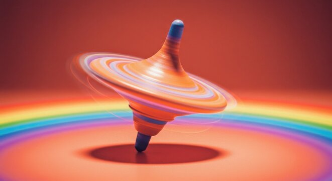

This project was to help us understand how gears work together, and how the speed and torque changes when you mesh different sized gears together. We used gears and a motor to create a launching platform for a top, then competed to see who's top could spin the longest. While my final gear was able to spin super fast, i didn't spend much time on the design of my top, which ultimately affected the spin time.